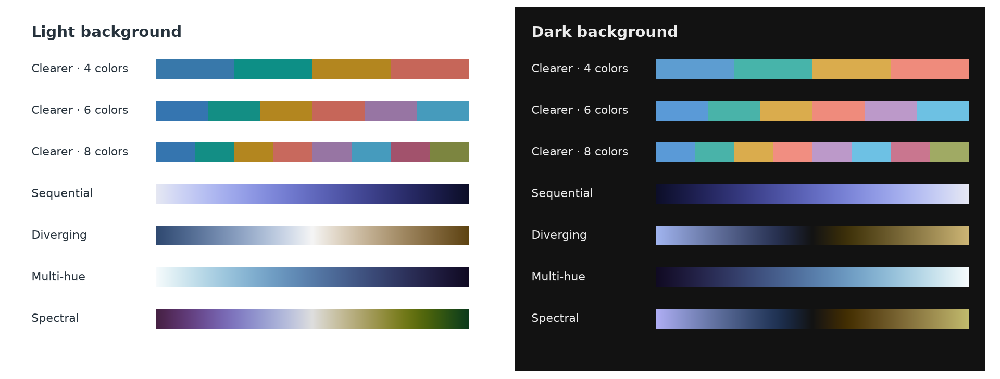
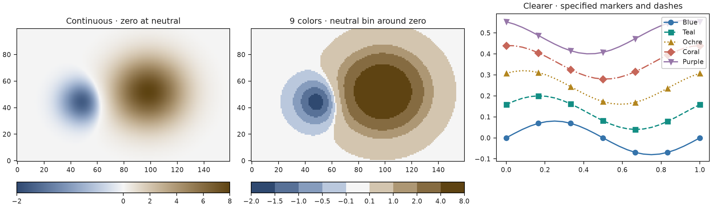
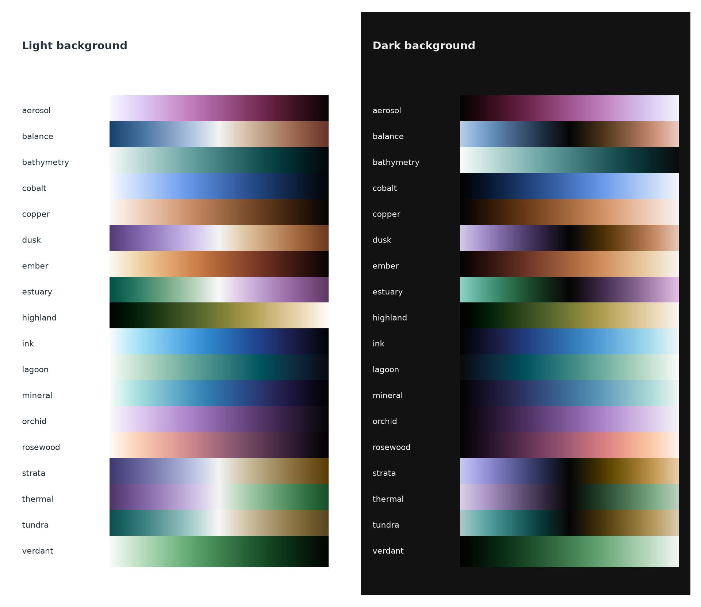
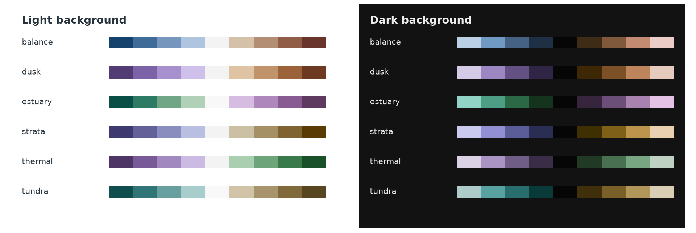
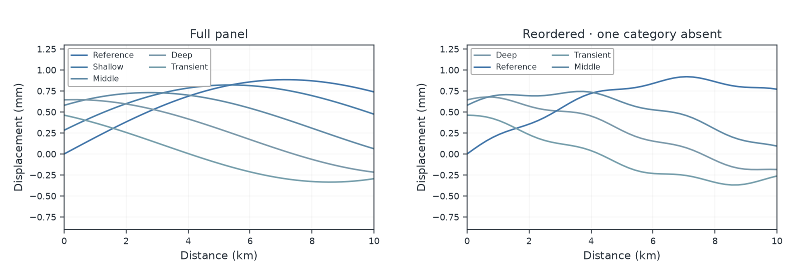
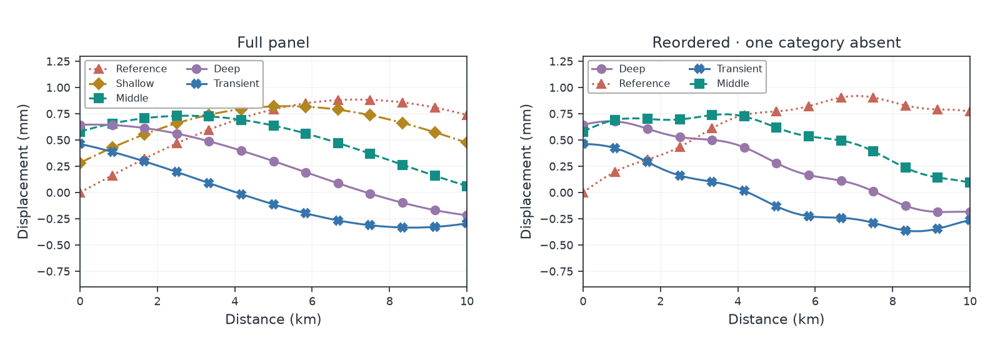

Software
Huevat
Scientific color palettes and gradients for Matplotlib, Plotly and UltraPlot. Choose colors for categories, continuous fields, or values above and below a center.
View on GitHub
Clearer is the default categorical palette. Use background="dark" for dark figures.
Quick start · Plotting examples · Figure doctor · API guide · Release notes
Recent updates
- 18 named gradients, including six new choices: Cobalt, Copper, Dusk, Orchid, Tundra and Verdant, each with light and dark versions.
- Revised Aerosol, Bathymetry and Thermal to distinguish the reported lookalike routes. Earlier versions remain available through their saved recipes and immutable design IDs.
- Nine colors by default with
gradient.discrete(). Diverging and Spectral gradients include the exact neutral as the fifth color. Explicit even counts are supported and omit the midpoint. - Named suffixes:
_rreverses,_dselects dark, and_d_ror_r_dcombines both.
All eighteen named gradients are supported. Numerical screening results and usage guidance are available in the methods documentation. See the release notes and installation and release guide.
Install
Install Huevat from PyPI with your plotting library:
python -m pip install "huevat[matplotlib]"
python -m pip install "huevat[plotly]"
python -m pip install "huevat[ultraplot]"
Requires Python 3.10+. For colors alone, use python -m pip install huevat.
Make a plot
import numpy as np
import matplotlib.pyplot as plt
import huevat as hv
from huevat.adapters import matplotlib as hmpl
xx, yy = np.meshgrid(np.linspace(-3, 3, 160), np.linspace(-2, 2, 100))
field = (8 * np.exp(-((xx - .7)**2 + (yy - .1)**2))
- 2 * np.exp(-((xx + 1.1)**2 + (yy + .2)**2) / .4))
gradient = hv.diverging()
nine_colors = gradient.discrete() # default: 9, including the neutral midpoint
boundaries = [-2, -1.5, -1, -.5, -.1, .1, 1, 2, 4, 8]
palette = hv.categorical(5)
fig, axes = plt.subplots(1, 3, figsize=(12, 3.5), layout="constrained")
continuous = axes[0].imshow(field, cmap=hmpl.colormap(gradient), origin="lower",
norm=hmpl.normalizer(-2, 8, center=0))
discrete = axes[1].imshow(field, cmap=hmpl.colormap(nine_colors), origin="lower",
norm=hmpl.boundary_normalizer(nine_colors, boundaries))
axes[0].set_title("Continuous · zero at neutral")
axes[1].set_title("9 colors · neutral bin around zero")
fig.colorbar(continuous, ax=axes[0], orientation="horizontal")
fig.colorbar(discrete, ax=axes[1], orientation="horizontal")
axes[2].set_prop_cycle(hmpl.cycle(palette, markers=["o", "s", "^", "D", "v"],
linestyles=["-", "--", ":", "-.", "-"]))
x = np.linspace(0, 1, 25)
for i, label in enumerate(["Blue", "Teal", "Ochre", "Coral", "Purple"]):
axes[2].plot(x, .12 * i + .08 * np.sin(2 * np.pi * x + i / 2),
label=label, markevery=4)
axes[2].set_title("Clearer · specified markers and dashes")
axes[2].legend(fontsize=8, loc="upper right")
plt.show()
For a field, pass hmpl.colormap(hv.sequential()) to imshow or pcolormesh.
Use hv.diverging() with hmpl.normalizer(vmin, vmax, center=0) for signed data.
The discrete example uses nine colors, with zero inside the neutral bin
from −0.1 to +0.1. Choose bin boundaries to suit your data.

See complete examples for all three plotting libraries.
More gradients
Eighteen additional gradients cover general plots, seismic data, terrain, depth, and atmospheric fields, with supported light and dark variants.

gradient = hv.gradient("bathymetry")
new_gradient = hv.gradient("verdant")
reversed_gradient = hv.gradient("thermal_r")
dark_gradient = hv.gradient("thermal_d")
dark_reversed_gradient = hv.gradient("thermal_d_r")
print(hv.gradient_names())
The revised routes are:
| Gradient | Current route | Previously similar to |
|---|---|---|
| Aerosol | Deep red → magenta → pale violet | Rosewood |
| Bathymetry | Pale cyan → turquoise → deep ocean, darkening with depth | Mineral |
| Thermal | Violet → neutral → green | Balance |
Append _r to reverse a named gradient or _d to select its dark version;
combine them as _d_r or _r_d. gradient.reversed() also changes direction.
_d is equivalent to background="dark"; combining it with an explicit
background="light" is an error.
For separate colors, gradient.discrete() selects nine bins. Diverging scales
include their neutral midpoint; explicit even counts remain available.
signed = hv.diverging()
nine_colors = signed.discrete() # neutral is nine_colors.colors[4]
assert nine_colors.colors[4] == hv.to_hex(signed.at(0.5))
Check hv.known_counts(gradient) for tested counts.
hv.optimized_discrete(gradient, n) searches for better-spaced colors and
requires the design extra.

Figure doctor
Coordinate colors, markers and dashes in an existing figure. Repeated labels keep the same style across panels.
| Before | After |
|---|---|
 |
 |
Install with python -m pip install "huevat[design,matplotlib]", or replace
matplotlib with plotly or ultraplot.
from huevat import doctor
scene = doctor.inspect(fig)
closer, separation, simple = doctor.propose(scene)
preview = doctor.preview(fig, separation)
change = doctor.apply(fig, separation)
change.undo()
Figure doctor guide explains previews, fixed colors and keeping styles across figures. Review the result at the size you intend to use.
Save colors
hv.export(palette).write("palette.json")
restored = hv.load_export(open("palette.json", encoding="utf-8").read()).design
hv.export(hv.diverging(), n=7, format="csv").write("colors.csv")
JSON saves a design for reuse. CSV and hex give you color lists; CSS is also available. See the quick start for labels and more examples.
Adapted from the Huevat README. Visit GitHub for the latest documentation.